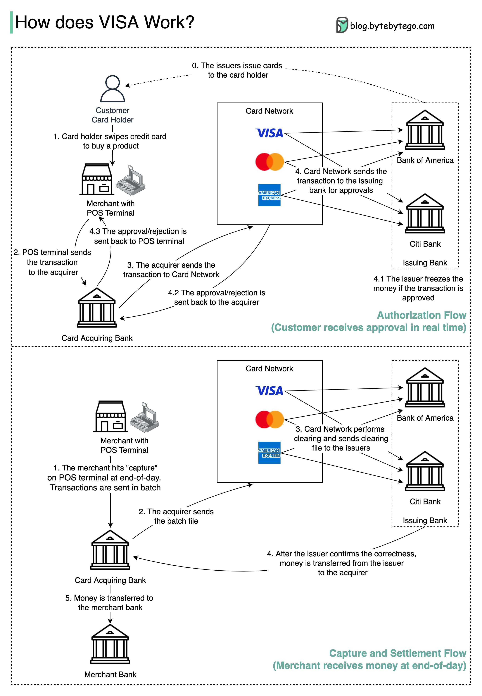

VISA, Mastercard, and American Express act as card networks for clearing and settling funds. The card acquiring bank and the card issuing bank can be – and often are – different. If banks were to settle transactions one by one without an intermediary, each bank would have to settle the transactions with all the other banks. This is quite inefficient.
The diagram shows VISA’s role in the credit card payment process. There are two flows involved. Authorization flow happens when the customer swipes the credit card. Capture and settlement flow occurs when the merchant wants to get the money at the end of the day.
Step 0: The card issuing bank issues credit cards to its customers.
Step 1: The cardholder wants to buy a product and swipes the credit card at the Point of Sale (POS) terminal in the merchant’s shop.
Step 2: The POS terminal sends the transaction to the acquiring bank, which has provided the POS terminal.
Steps 3 and 4: The acquiring bank sends the transaction to the card network, also called the card scheme. The card network sends the transaction to the issuing bank for approval.
Steps 4.1, 4.2, and 4.3: The issuing bank freezes the money if the transaction is approved. The approval or rejection is sent back to the acquirer, as well as the POS terminal.
Steps 1 and 2: The merchant wants to collect the money at the end of the day, so they hit ”capture” on the POS terminal. The transactions are sent to the acquirer in batches. The acquirer sends the batch file with transactions to the card network.
Step 3: The card network performs clearing for the transactions collected from different acquirers, and sends the clearing files to different issuing banks.
Step 4: The issuing banks confirm the correctness of the clearing files, and transfer money to the relevant acquiring banks.
Step 5: The acquiring bank then transfers money to the merchant’s bank.
Step 4: The card network clears the transactions from different acquiring banks. Clearing is a process in which mutual offset transactions are netted, so the number of total transactions is reduced.
In the process, the card network takes on the burden of talking to each bank and receives service fees in return.